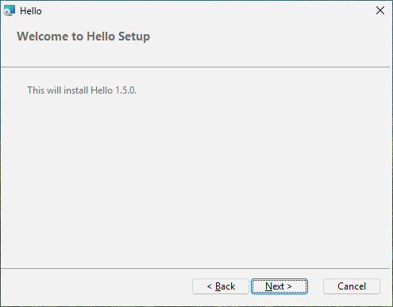

7 Several languages
Goal: one package whose pages speak English or Korean, with a license in each language, Korean chosen in advance on Korean Windows.
7.1 The source#
LICENSE-ko.txt, the Korean license, is next to LICENSE.txt.
# tutorial 07: hello.toml
format = 1
[package]
name = "Hello"
manufacturer = "Example Software"
version = "$(VERSION)"
arch = "x64"
upgrade-code = "{3F2A6C1D-8B4E-4F7A-9C2D-5E6F7A8B9C0D}"
ui = "installdir"
license = "LICENSE.txt"
downgrade-message = "A newer Hello is already installed."
[define]
VERSION = "1.5.0"
[ui]
languages = ["ko"]
license-ko = "LICENSE-ko.txt"
launch = "file:Hello"
[ui-text.WelcomeText]
text = "This will install [ProductName] [ProductVersion]."
text-ko = "[ProductName] [ProductVersion]을(를) 설치합니다."
[dir.INSTALLDIR]
path = "$(ProgramFiles)/Hello"
[file.Hello]
dir = "INSTALLDIR"
source = "dist/hello.exe"
[shortcut.StartMenu]
dir = "Programs"
name = "Hello"
target = "file:Hello"7.2 Adding a language: languages#
The pages are always in English. languages = ["ko"] in [ui] adds Korean to the same package, and then:
- the first page asks which language to use - English or 한국어;
- on a Windows whose regional format (or, failing that, system language) is Korean, 한국어 is already selected; elsewhere English;
- every page after it - welcome, license, folder, ready, progress, finished, and the cancel, error, files-in-use, disk-space and maintenance pages - speaks the language chosen.
With English alone there is no language page. A silent installation (/qn) shows no pages and needs no choice. RPLANGUAGE=ko on the command line picks Korean in advance - on the language page, which still comes first, and for a silent installation:
msiexec /i hello.msi RPLANGUAGE=ko
7.3 A license per language: license-xx#
license-ko = "LICENSE-ko.txt" is the license shown when Korean is chosen; English (and any added language without its own) shows [package] license. The same .txt / .md / .rtf rules apply.
7.4 A text per language: text-xx#
In [ui-text.ID], text is the text for every language and text-ko the Korean one. Every built-in text already exists in English and Korean; give text-ko only where you give text, so both languages say the same thing.
7.5 Languages other than English and Korean#
rubrapack's built-in pages are written in English and Korean. For another language - ja, de, fr, ... - you provide every text as text-xx yourself; the build lists the ones missing:
hello.toml:16:1: error[RP1202]: language 'ja' has no built-in texts: give [ui-text.ID] text-ja for all of them (64 missing, the first is Back)For such a language, three more keys in [ui] may help: name-ja (its name on the language page), font-ja (the typeface of its pages) and langid-ja (the Windows language numbers that select it in advance - one number or a list). For common languages (ja, zh, de, fr, es, it, pt, nl, pl, ru, uk, tr, vi, th) these three are built in.
7.6 Typefaces#
Each language's pages have their own typeface. Without anything in the source it is the face Windows itself uses for that language: Malgun Gothic (맑은 고딕) for Korean, Yu Gothic UI for Japanese, Microsoft YaHei UI for Chinese, Leelawadee UI for Thai, and Segoe UI for English and every other language. font-xx chooses another one for that language, and font-en for English:
[ui]
languages = ["ko"]
font-ko = "나눔고딕" # the Korean pages, and the Korean license text
font-en = "Tahoma" # the English pagesWrite the name as Windows lists it in Settings > Personalization > Fonts, at most 31 characters. The license text needs the face's English name: rubrapack knows it for Windows' own Korean, Japanese and Chinese faces and the Nanum faces; for another one write the English name ("Noto Sans KR"), or the license text stays in the language's usual face and the build warns. A typeface the user's computer lacks is replaced by a similar one, so a face that comes with Windows is the safe choice; the package does not install it.
7.7 What is not translated#
- Windows Installer's own words - the sizes and the menu in the feature tree, "time remaining", its error messages - come from Windows, not from the package.
- The downgrade message (chapter 3) and the removal message of
refuse-upgrade-beloware one text each; write them in both languages if you need both ("A newer Hello is already installed. / 더 새 Hello 가 설치되어 있습니다."). [package] language = "ko-KR"only sets the package's own language code; it does not make the pages Korean -languagesdoes.
7.8 Try it#
On a Korean Windows, double-click hello.msi: the language page has 한국어 selected; every page after it is Korean, with the Korean license. Choose English: the same pages in English with LICENSE.txt. Try msiexec /i hello.msi RPLANGUAGE=ko on an English Windows.

[ui-text.WelcomeText]7.9 What happened inside#
A Windows Installer package has no built-in notion of "several languages": each text on a page is fixed in its table. rubrapack therefore makes every text a property - a named value - and shows the property on the page:
C:\work\hello> rubrapack inspect hello.msi Property
...
RpT_WelcomeText This will install Hello 1.5.0.
RpT_WelcomeText_en This will install Hello 1.5.0.
RpT_WelcomeText_ko Hello 1.5.0을(를) 설치합니다.
...Before the first page, small actions copy the chosen language's texts into the shown properties; each runs only when its condition is true:
C:\work\hello> rubrapack inspect hello.msi InstallUISequence
...
RpL_ko_26 RPLANGUAGE = "ko" 127
...
C:\work\hello> rubrapack inspect hello.msi CustomAction
...
RpL_ko_26 51 RpT_WelcomeText [RpT_WelcomeText_ko]Type 51 is "set a property": RpT_WelcomeText becomes the value of RpT_WelcomeText_ko. The text is stored as UTF-8 in the package (code page 65001); Text in Part III explains text encodings, and the MSI database in Part IV how the strings are stored.